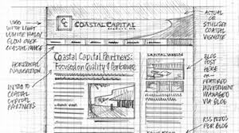

Készítünk modern, reszponzív weboldalakat, amelyek megfelelnek az ügyfél igényeinek és a legújabb trendeknek.
Szeretné, ha vállalkozása online jelenléte professzionális és modern lenne? Mi segítünk ebben! Teljes körű weboldal tervezési szolgáltatásunkkal olyan egyedi, felhasználóbarát és mobilbarát weboldalt készítünk, amely hatékonyan képviseli vállalkozását az interneten. Minden projektünknél egyedi designra törekszünk, hogy a weboldal tökéletesen tükrözze az Ön márkáját. Fontos számunkra, hogy az oldalak minden eszközön – legyen az mobil, tablet vagy asztali számítógép – kiválóan működjenek, azaz reszponzív megoldásokat kínálunk.Kiemelt figyelmet fordítunk a keresőoptimalizálásra (SEO) is, hogy weboldala könnyen megtalálható legyen a keresőmotorokban, és ezáltal növeljük vállalkozása online láthatóságát.A gyors betöltési idő és a gördülékeny működés szintén alapvető követelményeink, hiszen ez jelentősen javítja a felhasználói élményt. Weboldalainkat könnyen kezelhető adminisztrációs felülettel látjuk el, így Ön is egyszerűen szerkesztheti és frissítheti tartalmait. Lépjen kapcsolatba velünk, és készítsük el együtt az Ön számára tökéletes online megjelenést!